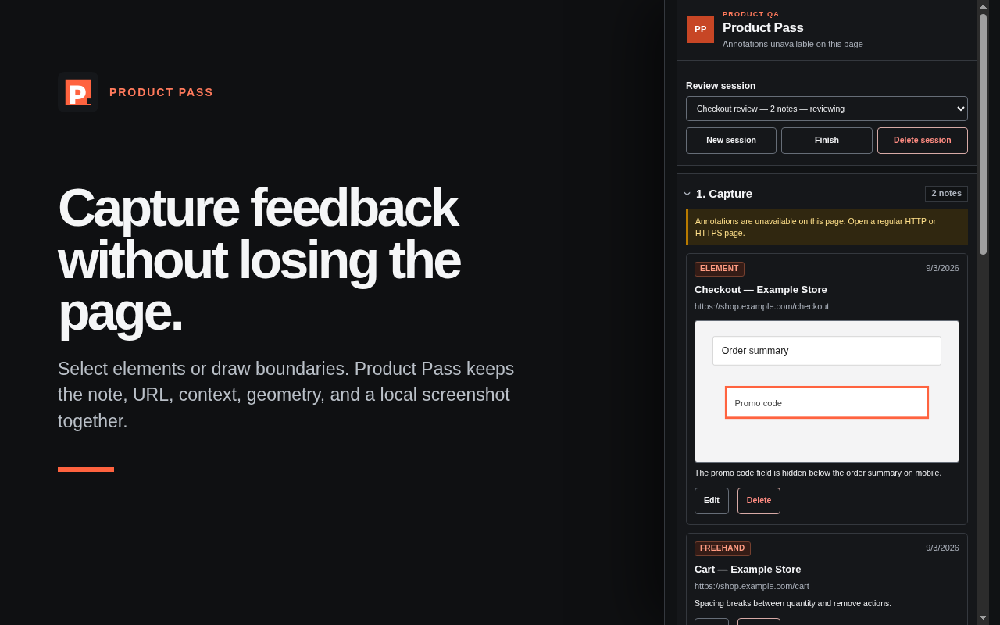
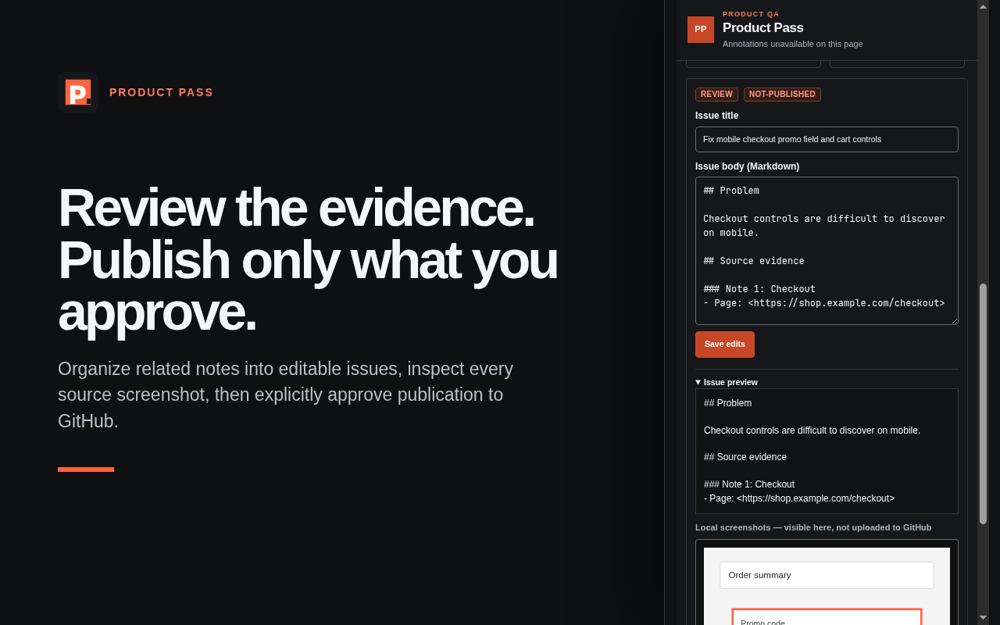

Point at the problem
Select an element, draw a freehand boundary, or record up to one minute of no-audio video with timestamped notes.
VISUAL QA, WITHOUT THE HANDOFF GAP
Keep annotations, screenshots, short screen recordings, page context, and review notes together—then turn only the work you approve into GitHub issues.
Release archives and checksums →Select an element, draw a freehand boundary, or record up to one minute of no-audio video with timestamped notes.
URLs, page titles, selectors, geometry, notes, screenshots, and recordings remain attached to the review.
Organize notes locally or with your chosen AI provider. Edit every draft and explicitly approve it before GitHub publication.
No Product Pass backend, advertising, analytics, or tracking. Media stays local unless you opt into a GitHub upload.
FROM EVIDENCE TO ACTION
Capture context while it is visible. Shape the result before it becomes backlog.


BUILT FOR INTENTIONAL SHARING
Product Pass has no publisher-operated application backend. Provider requests and GitHub publication happen only when you initiate them. Read the privacy policy →
{kind=link}
{kind=link}